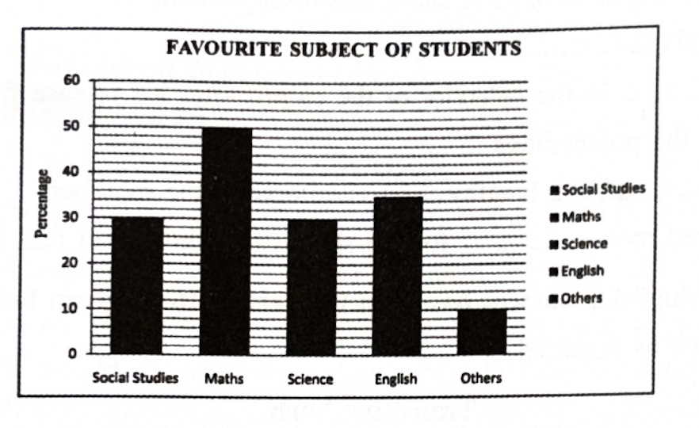
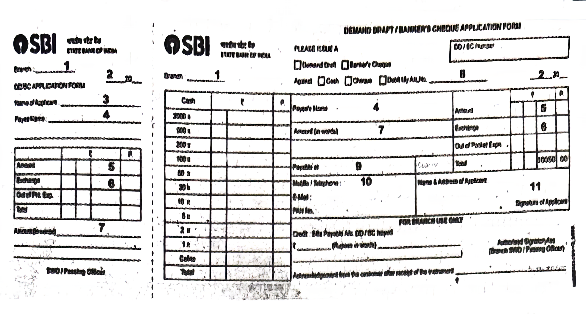

Time: 3 Hours
Max Marks: 80
1. Answer ANY TWO of the following questions in about 100 words each. (2 × 4 = 8)
a) Travel is an excellent educator. Explain with reference to Russell’s essay How to Avoid Foolish Opinions.
b) How did A. P. J. Kalam encourage Dr. Vasudevan and what has been the outcome?
c) Sketch the character of Jim in the light of Ma Ryan’s comments: “It is the same! But how did it get into Jim’s pocket?”
2. Answer ANY TWO of the following questions in about 100 words each. (2 × 4 = 8)
a) What is the theme of the poem On the Grasshopper and Cricket?
b) According to Keats, when does one hear a cricket’s song?
c) What does the line “The river needs to take the risk of entering the ocean” mean? Discuss.
3. Answer ANY TWO of the following questions in about 100 words each. (2 × 4 = 8)
a) What did Satish’s mother advise him about strangers? How did Arun and Satish react to her advice?
b) “Love, sacrifice and generosity are the essential elements for happy living.” Explain the statement with reference to the story A Gift for Christmas.
c) The narrator thought that his interview was superfluous. Why?
4. Read the following passage carefully and answer ANY FOUR questions given after it in a word or a sentence each. (4 × 1 = 4)
In this busy round of work, Dr. Raman had not noticed that Gopal had not called in for over three months now. He just remembered it when he saw Gopal’s son sitting on a bench in the consulting hall one crowded morning. Dr. Raman could not talk to him for over an hour. When he got up and was about to pass on to the operation room, he called up the young man and asked,
“What brings you here, sir?” The youth was nervous and shy. “Mother sent me here.”
“What can I do for you?”
“Father is ill...”
Questions:
i) What was that Dr. Raman had not noticed?
ii) How did Dr. Raman remember what he had not noticed earlier?
iii) What kind of young man was Gopal’s son?
iv) What was the problem that made Gopal’s son visit Dr. Raman?
v) Write the phrase from the passage that shows Dr. Raman was always busy.
vi) Write the part of speech of the word round in “...busy round of work...”
5. Read the following passage carefully and answer ANY FOUR questions given after it in a word or a sentence each. (4 × 1 = 4)
Whom to Salute?
When Dr. Abdul Kalam was the President, he visited Field Marshall Sam Manekshaw, who was ailing in the Military Hospital, Coonoor. He enquired about Sam’s health and asked, before leaving, whether he had any grievance. Sam replied that his only grievance was he wasn’t able to stand up and salute his most respected President. Kalam held Sam’s hands as both were in tears. Actually, Sam didn’t tell Kalam that he had not been paid the pension of Field Marshall’s rank till then, for nearly twenty years. However, Kalam came to know about it and passed the pension with arrears within a week and sent the cheque of nearly Rs. 1.25 crores to Sam through the Defence Secretary by a special plane. That is the greatness of APJ. But then, Sam received the cheque and promptly donated it to the Army Relief Fund. Who will you salute now?
Questions:
i) What did Kalam ask Sam before leaving him?
ii) What was Sam’s reply?
iii) Was Sam still in service at that time?
iv) Find the word from the passage that means “money that is owed and should have been paid earlier”.
v) Which act of APJ proves his greatness?
vi) The passage conveys the message that we should salute only one of the personalities mentioned in the passage. Say true or false.
6. Study the advertisement given below and answer ANY FOUR questions given after it. (4 × 1 = 4)
i) What is being promoted through this advertisement?
ii) Why has the programme been launched?
iii) What is the minimum initial deposit amount of SSY?
iv) What is the rate of interest for SSY?
v) Number of deposits one can make in a year _______. (Fill in the blank)
vi) Partial withdrawal up to 50% is allowed after 18 years of age. Is this statement true or false?
7. Read the bar graph below and answer ANY FOUR questions given after it. (4 × 1 = 4)

i) What does the bar graph present?
ii) How many subjects are shown in the bar graph?
iii) Name the most popular subject.
iv) Which subject is a favourite one with 50 students?
v) Which subject is less popular: Science or English?
vi) The number of students who like social studies is _______. (Fill in the blank)
[NOTE : Answers of this Section must be written in one place in the same serial order]
8. Rewrite the following passage/sentences using EIGHT punctuation marks wherever necessary. (8 × ½ = 4)
a) after a decades hard work and persistent efforts him simple invention of a technology to use plastic waste to lay roads patented by TCE finally got a shot in the arm last month with the centre approving its wider application
b) sumit said where are you going
9. Match ANY FOUR of the following words in Column ‘A’ with their meanings/definitions in Column ‘B’. (4 × 1 = 4)
| Column A | Column B |
|---|---|
| i) anonymous | (a) a place for keeping cars |
| ii) calligraphy | (b) a collection of dried plants |
| iii) garage | (c) one who never takes alcoholic drinks |
| iv) herbarium | (d) a person not identified by name, of unknown name |
| v) teetotaler | (e) a large meal on a day of celebration |
| vi) feat | (f) the art of good handwriting |
10. Fill in ANY FOUR blanks in the following sentences with suitable idiomatic expressions given below. Make necessary changes in the idioms if needed. (4 × 1 = 4)
Idioms: take the rap, in a nut shell, a sea change, by a whisker, get the rod, a thick skin
1) Finally, our team lost _______ and I was disappointed.
2) A politician needs _______.
3) There is _______ in the behaviour of the culprit after his release from the prison.
4) Let me explain the proceedings _______.
5) Rahul _______ after a lengthy discussion among the members.
6) She was prepared to _______ for the shoplifting, though it had been her sister’s idea.
11. Make FOUR meaningful sentences based on the verb pattern given below. An example is given as a model. (4 × 1 = 4)
| Subject | Transitive Verb | Object |
|---|---|---|
| I | wrote | this story |
12. Fill in ANY EIGHT blanks of the given bank form based on the information furnished below. (8 × ½ = 4)
You are Mr. Srinivas, staying at Vidyanagar, Adilabad. You want to purchase some books from ‘Assorted Book Store’, Hanumankonda. Your Account number is 53410076148. Apply for a Demand Draft for Rs. 3,600/- today in favour of the book store payable at the SBI, Hanumankonda Main Branch. The exchange to be paid is Rs. 40/-.

13. Prepare a curriculum vitae in response to the following advertisement. (1 × 4 = 4)
VASAVI PUBLIC SCHOOL
(Sponsored by Vasavi Academy of Education, Estd. 1987)
(Affiliated to Central Board of Secondary Education, New Delhi)
3-6-215, Street No. 15, Punjagutta, Hyderabad – 500 029. Ph. No. 040-2322097
Recruitment
Invites dynamic and dedicated candidates with excellent communication skills and confidence to lead in challenging situations.
TEACHERS AT ALL LEVELS:
COORDINATOR: Pre-primary to Class II (Foundation Stage)
SPORTS & PERFORMING ARTS:
NON-TEACHING STAFF:
Deserving candidates would be remunerated suitably. For application form, qualification, experience and other details visit: www.vpshyd.ac.in. Duly filled-in applications along with supporting documents may be submitted to the undersigned on or before 25-04-2022.
Date: 14-04-2022
Secretary
14. You would like to know the procedure you have to follow if you lost a library book. Write an enquiry letter to the librarian requesting for information. (1 × 4 = 4)
OR
Write a letter to your friend telling him/her about the new college you joined recently.
15. Read the following passage and make notes. Add a suitable title. (1 × 4 = 4)
The brain has three main divisions, each having its own particular function. The cerebrum is the largest and best-developed section of the brain. It is made up of many areas containing cells that control various parts of the body. Some areas perform the function of directing muscular activity. They allow the head to be turned, for example; other areas are responsible for sight, hearing, and speech.
The cerebrum is also the centre of intelligence and it enables human beings to reason and remember. The cerebellum is a small section of the brain below the cerebrum; its function is to coordinate the movement of limbs and also to control balance. The medulla oblongata is an enlarged area that connects the brain to the spinal cord. It serves to regulate the activities of involuntary muscles.
The parts of the brain are highly specialized. Together they make up the complex organ that controls the nervous system.
16. Mark the stress for ANY EIGHT of the following words. (8 × ½ = 4)
i) delay ii) biography iii) carry iv) economic v) sixty
vi) nature vii) hotel viii) victory ix) application x) jellyfish
17. Imagine you got the first rank in the intermediate first year examination. Your close friend came to congratulate you. How do you share your experience with him? Write a dialogue between you and your friend. (1 × 4 = 4)
OR
Construct a dialogue between a customer and a salesman who has been sold a defective apparel.